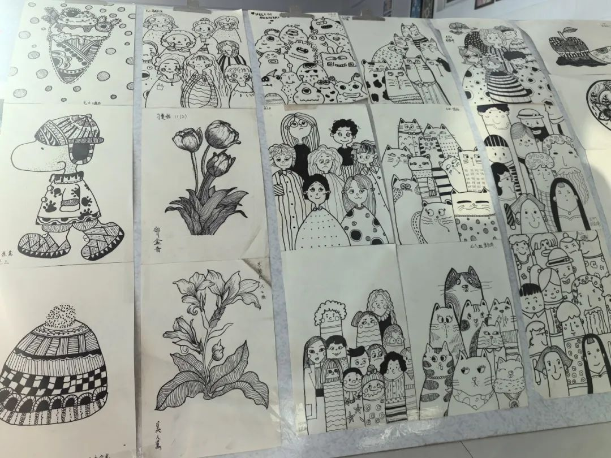
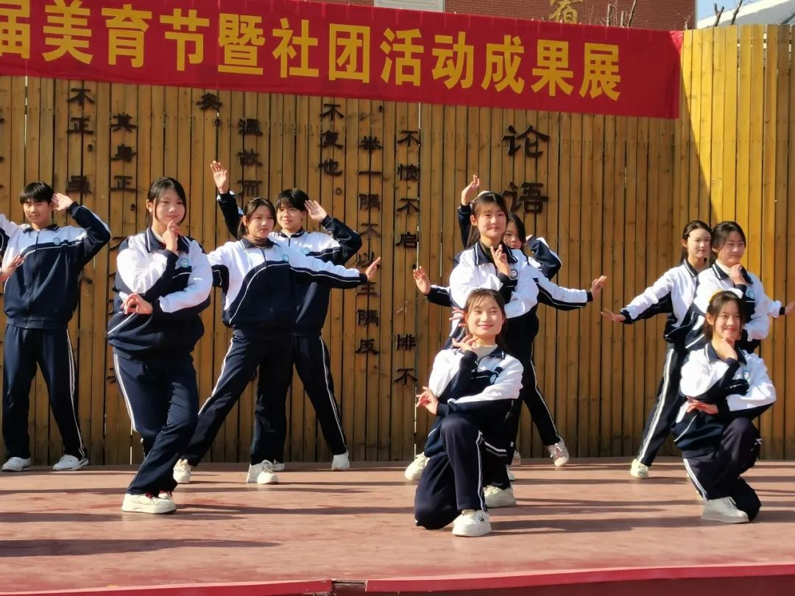

嗨害嗨
-
第四届美育节展演
2024-12-31
贴主:永宁街中学科研处兴于诗，立于礼，成于乐。在追求卓越的道路上，永宁街中学始终秉持着育人为本、全面发展的教育理念。为了展示社团魅力，彰显学生风采，12月31日中午，校长李清创，副校长刘苋、张留星、黄菊芳，工会主席武峥与全体师生齐聚学校操场，共同见证了第四届美育节暨社团活动成果展的盛况。
艺术的盛宴 文化的传承

展示类
展示类节目如同一场视觉与心灵的盛宴，令人目不暇接。常青藤书法社团的写春联送福展示，墨香四溢，让大家感受到了浓浓的年味；书画社团的书画展示，笔走龙蛇，展现了学生们的高超技艺；星光美术社团的素描展示，光影交错，体现了学生们对光影和线条的独特理解；剪纸社团的剪春字活动，巧手翻飞，剪出了对新年的美好祝福；手艺社团的百变“绒”花，色彩斑斓，展示了学生们的心灵手巧。走进社团作品展区，仿佛步入了一座艺术的殿堂，让人流连忘返。


活力的展演 青春的风采
展示类
展演类节目同样引人入胜。
蝶飞舞蹈社团的舞蹈《维族风情》，舞姿优美，旋转跳跃间展现了维族舞蹈的独特魅力。

五禽戏社团的养生操表演《五禽戏》，动作流畅，刚柔并济，彰显了中华传统文化的博大精深。
中华武术社的武术表演，虎虎生威，气势磅礴，让人感受到了武术的力量与美感。
绽芳华 谱华章
艺术是生活的镜像，社团是校园的瑰宝。经过精心筹备和辛勤付出，永宁街中学第四届美育节暨社团活动成果展取得了圆满成功。这次活动不仅展示了各社团的丰硕成果，也彰显了永宁街中学师生积极向上的精神风貌和实践创新能力。砥砺深耕，笃行致远。未来，永宁街中学将继续秉承“五育并举”的宗旨，聚焦核心素养，让社团活动真正成为学生增强素质、提升内涵、发展个性的“百花园”。我们期待更多的学生在这片“百花园”中绽放光彩，书写属于自己的精彩篇章。
撰稿：徐亚楠
编辑：梁小珍
来源：科研处
审核：张留星